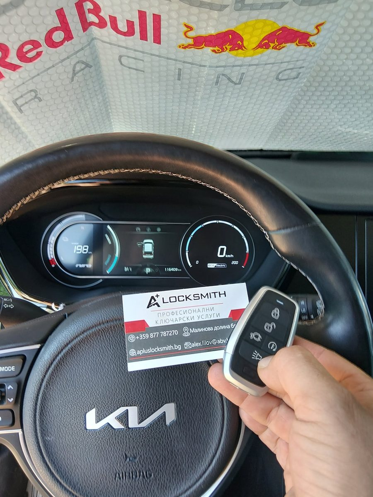

Kia Niro без нито един ключ — изработка на нов смарт ключ на място
Собственик на електрическа Kia Niro остана без нито един работещ ключ — ситуация, която по обичайния път означава репатрак и дни чакане. Колата тръгна същия ден, от мястото, на което беше спряла.

Накратко: електрическа Kia Niro, нито един работещ ключ. Отключихме автомобила без повреди по вратата и ключалката, извадихме нужните данни от системата и записахме изцяло нов смарт ключ с пълна функционалност — всичко това на адреса, на който колата беше спряла. Собственикът потегли същия ден.
Случаят
Загубата на единствения ключ е сред най-неприятните неща, които могат да се случат на един собственик — а при съвременен автомобил със смарт достъп положението изглежда безнадеждно. Обичайният път минава през репатрак до сервиз, поръчка на части и чакане с дни, през което колата стои чужда на паркинга.
Тази Kia Niro не мръдна от мястото си. Дойдохме при нея.
Защо това е от трудните случаи
Добавянето на втори ключ и изработката при изгубени всички ключове са две различни работи. При първата колата има от какво да тръгне — има работещ ключ, който системата вече познава. При втората няма нищо и данните трябва да се извадят директно от самата система.
Затова „останах без ключ“ е сценарий, при който се обажда повече от половината ни клиенти, но е и този, който изисква най-много подготовка. Самата изработка на автомобилен ключ, стъпка по стъпка, е тема за себе си.
Откъде идва бързината
Тук е редно да се каже нещо честно. Работата по автомобилен ключ не е проста и ние никога не твърдим обратното. Бързината, която усеща клиентът, не идва от това, че сме прескочили стъпки — идва от това, че сложната част е свършена, преди телефонът да звънне.
Оборудването
Работим с професионални платформи от актуалното поколение — AVDI, Tango и Orange. Първите две покриват диагностиката и програмирането на ключове през широк кръг марки, включително съвременните системи със смарт достъп; Orange влиза, когато работата слезе на ниво модул и памет, тоест там, където през диагностичния конектор вече няма път.
Това оборудване се обновява постоянно и не е случайно: всяка нова година автомобили носи нови протоколи, а миналогодишната версия просто не ги познава. Същата техника позволява и работа директно при автомобила, вместо на маса в ателието.
Над десетилетие на терен
Зад А+ Ключар стои над десетилетие практика на терен. Това не се вижда в сметката за време, но се вижда в липсата на лутане: след толкова години човек знае още по телефона кой е вероятният път за дадена марка и поколение, какво да вземе със себе си и къде обикновено засича. Новакът го научава на място, за сметка на клиента.
Складът
Правилната заготовка и правилният чип трябва да са налични в момента на обаждането. Голяма част от случаите, в които клиент чака дни, не чака заради процедурата, а заради доставка.
Мобилността
Оборудването пътува. Това спестява репатрак, спестява ден без автомобил и премахва цяла стъпка от веригата — колата не отива никъде, работата идва при нея.
Какво не ускоряваме
Има неща, които не бива да се бързат, и не ги бързаме.
Част от автомобилите изискват заложено изчакване, преди да позволят достъп до системата за ключове. Това не е забавяне, а защита — точно тя прави кражбата бавна. Никое оборудване не я прескача и всеки, който твърди обратното, или не казва истината, или работи по начин, който не бихме препоръчали на никого.
Не бързаме и с проверката накрая. Ключ, който пали, но не заключва, не е свършена работа.
Какво получи клиентът
- Отключен автомобил без повреди — без следи по вратата, стъклото или ключалката.
- Изцяло нов смарт ключ с пълния набор функции на оригинала.
- Работа на адреса — без репатрак и без местене на колата.
- Проверка на място, преди да си тръгнем.
Ако сте в същата ситуация
- Не местете колата и не опитвайте да я отворите сами — поправката на счупена ключалка е отделна работа.
- Обадете се с данните на автомобила — марка, модел, година. По телефона става ясно дали случаят е мобилен.
- Пригответе документите за собственост и лична карта.
- Кажете, ако имате и други ключове, дори неработещи — това понякога сменя целия подход.
Подобни случаи сме решавали и на Toyota Sequoia, и на Toyota Corolla, а при по-новите системи — като BMW с BDC3.
Често задавани въпроси
Какво да правя, ако съм изгубил ключа за колата си?
Не местете автомобила и не се опитвайте да го отворите сами — рискувате повреда по вратата или ключалката, която после трябва да се ремонтира отделно. Обадете се на мобилен автоключар, който идва на място, отключва без повреди и изработва нов ключ директно на адреса.
Може ли да се направи нов ключ без нито един оригинал?
Да, в повечето случаи. Щом в колата не е останал оригинал, нужната информация се чете от самата нея на автомобила със специализирано оборудване и по тях се изработва и записва нов ключ. Това е по-дълбока работа от добавянето на втори ключ, но е изпълнима на място.
Колко време отнема изработката на нов смарт ключ?
При повечето съвременни модели работата на място се побира между половин час и два часа. Разликата идва от марката, поколението на системата и от това дали автомобилът изисква заложено изчакване, преди да позволи достъп до ключовете.
Трябва ли колата да се кара до вас?
Не. Цялата работа се върши на адреса, на който е автомобилът — включително отключването и записването на новия ключ. Репатрак е нужен само в изключителни случаи и ви го казваме предварително, а не на място.
Какви документи ще поискате?
Документ за собственост на автомобила и лична карта. Това е задължително условие и е във ваша полза — същата проверка пази вашата кола от това някой друг да си поръча ключ за нея.
Новият ключ ще има ли всички функции на оригинала?
Да. Централно заключване, безключово запалване и съпътстващите функции на комфорта се записват наведнъж. Проверяваме ги на място, преди да приключим — ключ, който пали, но не заключва, не е свършена работа.
Какво става със стария ключ, ако се намери по-късно?
Зависи от това как е направена процедурата. При изгубени ключове обикновено е редно старите да бъдат изтрити от системата — иначе колата продължава да се отваря с ключ, който е у неизвестно лице. Намери ли се после, може да бъде записан наново.
Работите ли с електрически автомобили?
Да. Електрическите модели използват същата логика на достъп и имобилайзер като останалите, а тази Kia Niro е точно такъв случай. Разликата е в поколението на системата, не в задвижването.
Всяка марка ли може да се направи на място?
Повечето — да. При част от най-новите поколения се налага допълнителна работа или по-дълго изчакване, а при единични системи работата не е мобилна. Казваме го по телефона, преди да тръгнем, за да не губим времето и на двете страни.
Имате подобен случай?
Обадете се за оглед или консултация — работим в София с посещение на адрес.